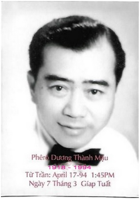

Ông Dương Thành Mậu sinh năm 1918 tại Cần Thơ và mất năm 1994 tại Paris, France
Những Chức Vụ Ông Đã Đảm Nhận:
- Hiệu Trưởng Trường Tiểu Học Quận Cái Bè, Tỉnh Định Tường.
- Trưởng Ty Tiểu Học Tỉnh Kiến Hòa.
- Trưởng Ty Tiểu Học Tỉnh Vĩnh Bình
- Trưởng Ty Tiểu Học Tỉnh Long An.

‘’Mục đích của cuộc cách mạng quốc gia là giải phóng con người. Giải phóng con người, cần phải giải phóng về tinh thần như về vật chất’’.
Tổng Thống Ngô Đình Diệm.
MỤC LỤC
Kính Dâng...
Lời giới thiệu của Linh Mục Giám Đốc Trung Tâm Huấn Luyện Nhân Vị Vĩnh Long.
Lời nói đầu của biên giả.
Bản kiểm thảo Đạo Đức nhân dân một nước Độc Lập.
Bản kê các sách tham khảo.
I.- PHẦN CHÍNH
1.- Vấn đề ‘’con người’’
2.- Nhân Vị là gì?
3.- Nguồn gốc Nhân Vị.
4.- Học thuyết Duy Linh.
5.- Chủ Nghĩa Nhân Vị.
6.- Cách Mạng Nhân Vị.
II.- PHỤ CHƯƠNG
1.- Tình yêu Nhân Vị.
2.- Gia đình Nhân Vị.
3.- Giá trị Cần Lao Nhân Vị.
4.- Vụ án ‘’Chà đạp Nhân Vị’’.
KÍNH DÂNG
Đức Giám Mục Ngô Đình Thục, đã vì Đời, sáng lập Trung Tâm Huấn Luyện Nhân Vị Toàn Quốc Vĩnh Long.
KÍNH TẶNG
Hương hồn Thầy, Má, đã quên mình mà sống cho con.
CÙNG
Chư Quý Vị Ân Sư xa gần đã trực tiếp hoặc gián tiếp, truyền cảm cho con lý tưởng Nhân Vị Duy Linh, qua các bài giảng và tài liệu sách báo.
Con,
Sơn Chí Dương Thành Mậu
Từ khi ý niệm ‘’Nhân Vị’’ được phổ biến trên toàn lãnh thổ Việt Nam tự do, dân tộc đã vạch được một lối đi vững chắc.
Càng đến gần ánh sáng ‘’Nhân Vị’’ con người càng thấy mình sáng suốt; càng được sáng suốt, con người càng thấy mình được tự do.
Bao nhiêu sách vở báo chí, do các học giả biên soạn, chỉ làm thêm sáng tỏ vấn đề.
Riêng Trung Tâm Huấn Luyện ‘’Nhân Vị’’ toàn quốc tại Vĩnh Long, nơi đã đào tạo đến nay hơn hai nghìn cán bộ, rải rác tứ phương và đang âm thầm hoạt động cho chủ thuyết ‘’Nhân Vị’’, chúng tôi chưa cho xuất bản một quyển sách nào, ngoài những tài liệu ‘’quay tay’’ để ghi lại bằng những nét đại cương, các buổi thuyết trình hoặc giảng tòa tại Trung Tâm.
‘’ĐƯỜNG VỀ NHÂN VỊ’’ là quyển sách đầu tiên do một cựu khóa sinh, ông Dương Thành Mậu, Hiệu Trưởng Trường Tiểu Học Cái Bè (Định Tường), cố công biên khảo với mục đích ghi lại để phổ biến lan rộng một ít vấn đề đã thuyết trình tại Trung Tâm.
Chúng tôi hân hạnh xin giới thiệu cùng độc giả.
Quyển sách này còn có tính cách thực hành. Vì tác giả là một cựu khóa sinh, đã trải qua một cuộc sống tập thể theo ý niệm ‘’Nhân Vị’’, đã thảo luận hàng buổi và cả tháng với các giảng sư và bạn đồng khóa, tác giả còn tra cứu thêm mãi, để rồi thâu gọn đại cương vào một ít quan điểm nồng cốt.
Còn thiếu sót ít nhiều chi tiết thì cũng chỉ vì lẽ nói trên. Bù lại, quyển sách ‘’Đường Về Nhân Vị’’, ngoài lời văn giản dị và dễ hiểu, sẵn chứa đựng những yếu lý rất cần thiết.
Vĩnh Long, ngày 28 tháng 5 năm 1959.
Giám Đốc
Trung Tâm Huấn Luyện Nhân Vị
Linh Mục P. Nguyễn Văn Tự
LỜI NÓI ĐẦU
Tìm hiểu triết lý, nghiên cứu chủ nghĩa là một việc làm đòi hỏi nhiều thiện chí, lắm kiên tâm, vì triết lý là môn học rất khô khan, chủ nghĩa là câu chuyện rất phức tạp.
Luận Triết để cho người khác đọc, đề xướng chủ nghĩa cho người khác theo, phải là công việc của các bực triết nhân cao thâm uyên bác, và của các nhà cách mạng lão thành.
Nhưng trộm nghĩ, tiền nhân có lời nghiêm huấn: ‘’Quốc gia hưng vong, thất phu hữu trách’’ (nước nhà còn mất, kẻ tầm thường cũng chịu phần trách nhiệm). Nay trước cảnh ‘’hưng vong’’ của Quốc Gia Dân Tộc, tuy không dám học đòi thức giả, đem việc lớn ra bàn, nhưng nghĩ mình là một công dân, dù trí bạt tài hèn cũng xin góp chút phần vào đại cuộc.
Bởi thế nên soạn tập sách nhỏ này, biên giả không dám có cao vọng ‘’dời non lấp biển’’ hay ‘’đội đá vá trời’’ của chư vị đại nhân, mà chỉ có một thiểu nguyệt sau đây:
Trước là để tạ ân, Đức Cha đã sáng tạo cho dân tộc ngôi trường huấn luyện Nhân Vị tại Vĩnh Long, và quý vị ân sư đã dày công truyền cảm tư tưởng Nhân Vị cho biên giả, để biết sống thế nào cho xứng danh Nhân Vị của mình.
Thứ đến, là mong bắt được một nhịp cầu liên lạc, với quý vị tân cựu khóa sinh của Trung Tâm Nhân Vị, để đồng tâm đồng đức, noi chí tiền nhân, soi gương Ngô Lãnh Tụ, xây dựng hạnh phúc cho giống nòi và nhân loại.
Sau hết là, thành khẩn bộc bạch với quý đồng chí trong đoàn thể các nơi, cùng với đồng bào xa gần, vì bận việc nầy lẽ nọ, chưa có dịp tìm hiểu hay chưa đủ tài liệu để hiểu nhiều về tư tưởng nói trên.
Sau Kinh Thi, Khổng Tử viết ‘’Thuật nhi bất tác’’. Đây biên giả xin thưa rằng ‘’Ký nhi bất tác’’, bởi lẽ trong quyển sách nhỏ nầy, biên giả chỉ ghi chép thành mạch lạc, những điều đã học hỏi ở Trung Tâm Nhân Vị, cọng với tư tưởng nghiên cứu qua sách vở của các danh nhân, để bàn cùng quý bạn, việc tranh đấu cho địa vị và hạnh phúc con người và cũng để nhờ các bực cao minh bổ chính cho những điều khiến khuyết.
Biết không, chưa đủ; điều khẩn thiết ở hiện trạng ngày nay, là việc thực hiện cái biết qua việc làm. Đành rằng ‘’tri dị, hành nam’’, nhưng mỗi người chúng ta có cố gắng cải tạo được bản thân thì ‘’tri, hành’’ chóng chầy cũng ‘’hợp nhứt’’.
Tóm lại, ta nhìn nhận con người có giá trị, mà không tôn trọng nhân vị con người, cũng như ta biết mọi người là ‘’huynh đệ’’, mà chưa tương trợ tương thân, thì cái Biết của ta chưa ích gì cho nòi giống, cái Biết của ta chưa giúp gì cho đại cuộc nước nhà, nếu không nói là, chưa thấu triệt cái bản thể Tri Hành của Dương Minh.
Vậy ngay từ bây giờ, ta hãy thành khẩn Nhận Thức sứ mạng, thiêng liêng của con người ‘’linh ư vạn vật’’ để sớm thực hiện nó với một niềm tin tưởng vô biên.
Nay, Tàn Bạo và Dã Man đang hoành hành như vũ bão, phẩm giá con người rơi vùn vụt xuống hố sâu, mong sao, chúng ta sẽ gặp nhau trên ‘’Đường Về Nhân Vị’’ để cùng với Chính Phủ Cộng Hòa Nhân Vị Việt Nam, góp tay đặt lại địa vị con người, và xây dựng hạnh phúc cho toàn dân, trong một xã hội mới, có Công Bình và Bác Ái.
Cái Bè, ngày tự giác tự nguyện
5.5.1959
Biên giả cẩn chi
Sơn Chí Dương Thành Mậu
Sách ‘’ĐƯỜNG VỀ NHÂN VỊ’’, Trung Tâm Huấn Luyện Nhân Vị Vĩnh Long xuất bản lần đầu đã hết và chỉ phổ biến trong các khóa sinh thụ huấn tại Trung Tâm, đồng thời có kính biếu các Bộ.
Rất nhiều bạn đó đây, có dịp đọc qua, hoặc gặp gỡ nó trong kỳ Triển Lãm Văn Hóa năm 1959 tại Sài Gòn, tha thiết với vấn đề Nhân Vị, khuyên tôi nên phổ biến sách này lan rộng ra ngoài các giới, chưa có dịp đến Trung Tâm Thụ Huấn.
Cũng có một số học sinh bậc Trung Học quen biết với tôi, hoặc quen với học trò cũ của tôi, tỏ ý muốn xem qua cho biết Nhân Vị là gì?
Vì thế, nên sau một thời gian ngắn đắn đo suy nghĩ, tôi thành tâm thỉnh thị tôn ý quý vị ân sư, để bổ khuyết thêm vài khía cạnh, và chữa lại những câu văn chưa được rõ nghĩa, để cho vấn đề thêm sáng tỏ và nới rộng ra.
Thành thật mà nói, thì việc in lại quyển sách ‘’ĐƯỜNG VỀ NHÂN VỊ’’ nầy, quả là một cố gắng lớn lao đối với sức mọn của bỉ nhân, và cũng là công ơn khích lệ to tác của nhiều vị thiết tha với chủ nghĩa.
Thành tâm ước vọng, được các bạn xa gần, niềm nở tiếp nhận tập sách nhỏ nầy như ‘’một bạn sơ giao chân thành’’ trên trường học hỏi một lý thuyết có thể nói được là thích hợp với đường lối ‘’giải phóng toàn diện con người’’ ngày nay.
Kiến Hòa, Trung Thu 1960
Sơn Chí Dương Thành Mậu
kính ngôn
BẢN KIỂM THẢO
ĐẠO ĐỨC NHÂN DÂN MỘT NƯỚC ĐỘC LẬP
Nước muốn tiến phải có sự ‘’Đồng Tâm Nhứt Trí’’ của toàn dân. Muốn đồng tâm nhứt trí phải có một ‘’Lý Tưởng Chung’’, một ‘’Đạo Lý Chung’’.
Lý Tưởng Chung của người Việt là yêu Tổ Quốc Việt, bảo vệ độc lập giang sơn xứ sở, nối chí oanh liệt của Tổ Tiên, và duy trì cơ nghiệp vĩ đại, mà bao nhiêu thế hệ đã dày công hy sinh gây dựng và truyền lại cho chúng ta.
Đạo Lý Chung của người Việt là yêu chuộng Tự Do, tôn trọng nhân phẩm, phát triển Dân Chủ và thực hiện công bình xã hội.
Tất cả công dân Việt Nam, muôn người như một, đồng tâm đồng đức, tích cực bắt tay vào việc trừ hại, hưng lợi cho quốc gia dân tộc.
Chúng ta quyết tâm xây dựng quốc gia Việt Nam, trên những nền tảng mới, lấy nhân bản làm cương vị, lấy tự do dân chủ làm phương châm, lấy công lý xã hội làm tiêu chuẩn.
Hoàn toàn tôn trọng phẩm giá và quyền tự do chính đáng của mỗi người và của mọi người, triệt để đả phá mọi hình thức cưỡng bách, áp bức, mọi chính sách chỉ huy và nô lệ hóa nhân dân.
Muốn được vậy, chúng ta hãy theo đường lối cổ truyền gồm trong bốn chữ: Tu, Tề, Trị, Bình (Tu thân, tề gia, trị quốc, bình thiên hạ).
Chúng ta hãy tự luyện những đức sau đây: Trí, Dũng, Nhân, Liêm, Chính, và hy sinh vì Tổ Quốc.
Chúc bạn cố gắng đem lại thành công rạng rỡ cho riêng bạn, cho Tổ Quốc, và cho dân tộc Việt Nam.